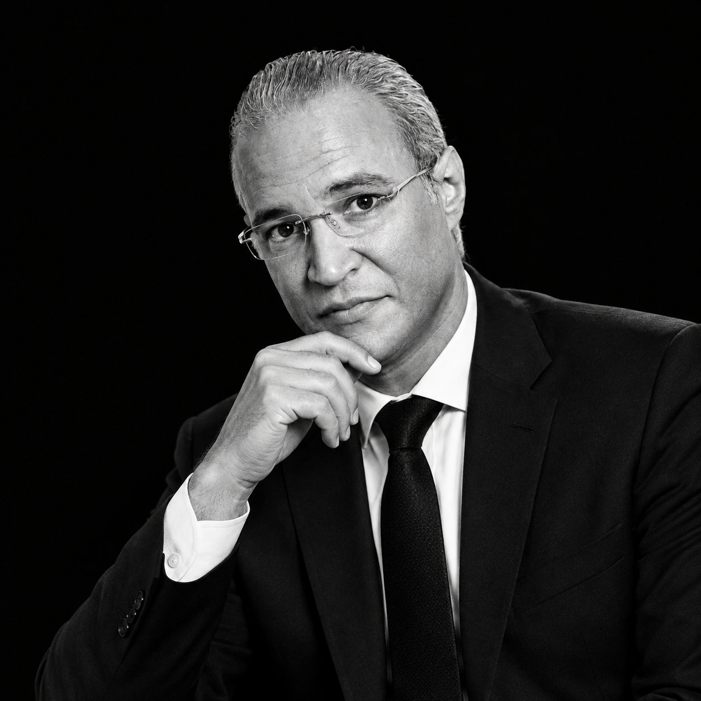

READ
THE GAME.
LEAD IT.
From El Kef to Saudi Arabia, Egypt, Qatar and Oman: sixteen years of coaching, assistant roles and football analysis built on preparation, observation and communication.


FROM THE
PITCH TO
THE MIND.
Coach, analyst and sports writer — with a career shaped by different football cultures.
Published biographical material describes Bayrem Mokhtari as a Tunisian professional football coach whose coaching path moved from Tunisia into Saudi Arabia, Egypt, Qatar and Oman, alongside work in football analysis and media.
READ THE STORY ↗MATCHES ARE WON
BEFORE THE WHISTLE.
EVERY
CLUB.
ONE PATH.
From Olympique du Kef to Saudi, Qatar, Oman and Egypt.
Explore every documented chapter, the role listed for each period, the club identity and links to available external sources.
EXPLORE CAREER ↗On the football side.
Local video supplied with the project. The same video can also be reached through the supplied Facebook share link.
OPEN FACEBOOK ↗Science of the game.
Craft of the coach.
Coach · Trainer · Speaker · Founder
Coaching
Training sessions, staff support and technical projects for clubs and academies.
Analysis
Tactical reading, match analysis and football commentary for media and teams.
Innovation
Digital tools that turn training knowledge into planned, measurable sessions.
WHERE FOOTBALL
MEETS METHOD.
Elite Sports Innovation Holding builds tools and training based on scientific foundations, for coaches, former players and anyone working in player development.
Its platform Pédagogue Sportif offers tactical analysis, session planning, performance analysis and a digital library of books and videos.
DISCOVER ELITE SPORTS ↗Watch the latest videos.
Football analysis, coaching and commentary, straight from the YouTube channel.
WATCH ON YOUTUBE ↗OPEN THE CHANNEL ↗